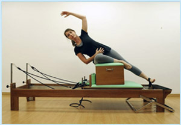
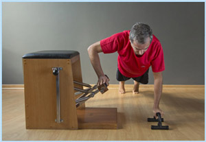
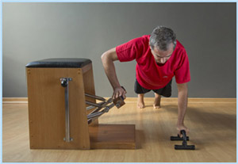

História do Método

Criado pelo alemão Joseph Pilates na década de 20, o método Pilates chega ao Brasil na década de 90, auxiliando na correção postural, fortalecimento muscular, mobilidade articular, entre outros benefícios.
A técnica une princípios orientais e ocidentais aos exercícios. Os aspectos orientais podem ser percebidos através do controle da respiração, o desenvolvimento da flexibilidade e uma maior concentração que permite ter maior consciência ao se exercitar.
Já os princípios ocidentais estão voltados ao condicionamento físico e ao desenvolvimento da força, com uma preocupação específica com os aspectos estéticos de força muscular, condicionamento físico e correção postural.
 A partir daí, Joseph Pilates, desenvolveu a técnica com base em seis princípios que devem estar ligados diretamente a cada movimento, com o objetivo de alcançar o tão desejado equilíbrio físico e mental, são eles: a concentração, a respiração, o acionamento do centro de força, a precisão, o controle e a fluidez de movimentos. A prática desses princípios proporciona uma maior consciência de seu corpo e de suas possibilidades, oferecendo inúmeros benefícios para o corpo, para a mente e para a alma. Certamente, o Pilates traz um bem-estar maior para a saúde geral, contribuindo para uma melhora na qualidade de vida, através do alívio de tensões, eliminação do estresse físico e mental do dia-a-dia.
 Melhora a capacidade cardiorrespiratória;
Melhora a capacidade cardiorrespiratória;
Incrementa o condicionamento físico e mental;
Alivia problemas relacionados ao estresse, diminuindo tensão e fadiga;
Melhora o desempenho sexual;
Melhora a osteoporose;
Melhora o sono e memória;
Propicia a harmonia do corpo, tornando-o mais equilibrado, flexível e forte;
Melhora a força, a elasticidade muscular e mobilidade articular;
Melhora a postura eliminando maus hábitos, levando ao correto alinhamento corporal;
Fortalece a musculatura abdominal;
Desenvolve os músculos que sustentam a coluna, eliminando dores crônicas;
Mantém a mente alerta;
Melhora o desempenho de atletas;
Melhora a auto estima.
 A partir daí, Joseph Pilates, desenvolveu a técnica com base em seis princípios que devem estar ligados diretamente a cada movimento, com o objetivo de alcançar o tão desejado equilíbrio físico e mental, são eles: a concentração, a respiração, o acionamento do centro de força, a precisão, o controle e a fluidez de movimentos. A prática desses princípios proporciona uma maior consciência de seu corpo e de suas possibilidades, oferecendo inúmeros benefícios para o corpo, para a mente e para a alma. Certamente, o Pilates traz um bem-estar maior para a saúde geral, contribuindo para uma melhora na qualidade de vida, através do alívio de tensões, eliminação do estresse físico e mental do dia-a-dia.
Benefícios
A prática regular do método Pilates traz excelentes benefícios aos alunos que conseguem perceber em poucas semanas as mudanças. Conheça os principais: Melhora a capacidade cardiorrespiratória; Incrementa o condicionamento físico e mental; Alivia problemas relacionados ao estresse, diminuindo tensão e fadiga; Melhora o desempenho sexual; Melhora a osteoporose; Melhora o sono e memória; Propicia a harmonia do corpo, tornando-o mais equilibrado, flexível e forte; Melhora a força, a elasticidade muscular e mobilidade articular; Melhora a postura eliminando maus hábitos, levando ao correto alinhamento corporal; Fortalece a musculatura abdominal; Desenvolve os músculos que sustentam a coluna, eliminando dores crônicas; Mantém a mente alerta; Melhora o desempenho de atletas; Melhora a auto estima. Indicação
O método Pilates é indicado para todas as pessoas (homens, mulheres, crianças a partir de 9 anos e idosos). Podem participar das aulas atletas, crianças, adolescentes, adultos e idosos que já praticam atividade física regularmente, aqueles que não praticam atividade há muito tempo e quem nunca realizou nenhum tipo de atividade física.